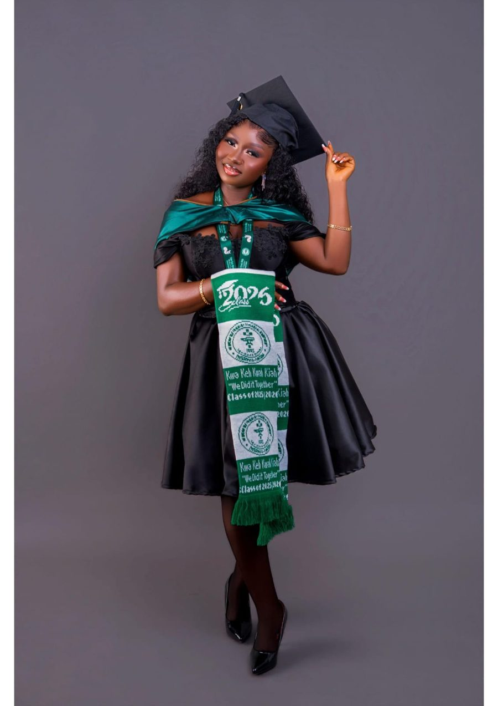
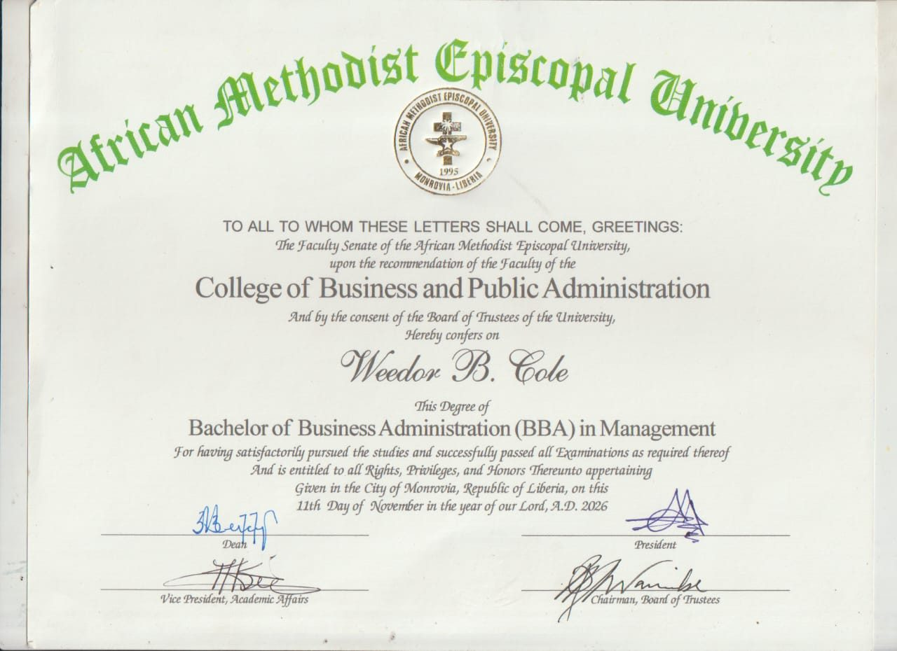

Gallery & Highlights
Entrepreneur & Founder
Graduation portrait, AMEU Class of 2026
Graduation Day, AMEU Class of 2026

Graduation portrait in cap and gown
Celebrating graduation
Graduation photo shoot

BBA in Management Degree Certificate

Leadership Event

Team Building Session

Volunteering Work

Volunteering Work

Volunteering Work

Volunteering Work
/Certificate Of Participation( Higher Life Embassy).png)
Partnership Recognition (Service & Team Execution)
/Certificate Of Participation.png)
Career Development Training
/certificate of honor(Royal Christian Foundation Institute).png)
Certificate of Honor: Outstanding Conduct